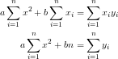
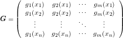
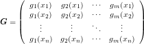

最小二乗法(最小自乗法とも書く)は、実験データのような誤差を含む値から、 それにフィットするような関数を求める手法の一つです。
例えば等速直線運動運動の観測実験を行なった結果、 次のような実験データが得られたとします。
| 時間(s) | 位置(m) |
|---|---|
| 0.0 | 1.0 |
| 1.0 | 2.3 |
| 2.0 | 3.4 |
| 3.0 | 4.4 |
| 4.0 | 5.9 |
| 5.0 | 7.0 |
この実験結果を時間をx軸、位置をy軸にとってグラフにプロットすると次のようになります。
この運動は等速直線運動なので、すべての点を通る直線が一本引けるはずです。 このような直線を引ければ、速度や初期位置がわかるので、いろいろと便利です。しかし現実にはどうしても測定誤差が発生してしまうため、 どんなに頑張って直線を引いても、図のようにデータポイントと直線は少しずれてしまいます。 仕方がないので、できるだけデータポイントから外れないような直線を引くことにしましょう。 最小二乗法はこのような直線を引く代表的な手法の一つです。
「できるだけデータポイントから外れない」とはどういうことでしょう？ もう少し数学的に表してみることにします。
i番目のデータポイントを 、求めたい直線をと
定義します。データポイントの数はnとします。
、求めたい直線をと
定義します。データポイントの数はnとします。
 と表すことができます。
この誤差を小さくすればデータポイントと直線が近くなりそうです。
と表すことができます。
この誤差を小さくすればデータポイントと直線が近くなりそうです。
一つのデータポイントにだけ近づけても仕方がないのでこの誤差の総和を取ります。 しかし、ただ単純に足すだけだとプラスとマイナスが打ち消しあってしまいます。 絶対値を取ってから足すのもいいのですが、絶対値というのは数学的に少し扱いが難しいので、 二乗して総和をとることにしましょう。
このJを最小化することが最小二乗法の目標です。
Jを最小にするには「極値となる点では、微分した結果が0になる」ということを 利用します。Jは下に凸な二次関数なのでこれで最小値が求まるはずです。 今具体的に求めたいのはaとbの値なので、それぞれについて偏微分してみましょう。

それぞれをイコール0と置いて整理すると、aとbに関する連立方程式となります。
あとはこれを消去法なり代入法なりクラメルの公式なりを使って解くだけです。 結論だけ書くと次のようになります。

もっと複雑な関数で近似してみることを考えてみましょう。
求めたい関数 がm個の既知の関数の
線形結合で表されているとします。
がm個の既知の関数の
線形結合で表されているとします。
ここで、 は関数を決定するためのパラメータです。
このを求めることが最終目標です。
は関数を決定するためのパラメータです。
このを求めることが最終目標です。
ですが、行列を使って次のように書くことができます。
これを縦にn個だけ並べれば、 における関数の値を
簡単に表すことが出来ます。
における関数の値を
簡単に表すことが出来ます。
ここで、
 
と置きました。

と置きました。
実際に測定した値をとすると 誤差の総和Jは次のように表せます。
これを最小化するためにパラメータaについて偏微分し、0とと置きます。
整理すると、解かなければならない連立方程式は
 となります。
となります。
SVGを使ってグラフを描くJavascriptを作ってみました。 黒い線が元の関数(直線, 2次関数, 三角関数から選択可)、 赤い点が元関数にランダムノイズを加えたもの、 青い線が最小二乗法によって求めた近似曲線です。
SVGの描画にはRaphaëlを 行列計算にSylvesterを使用しています。